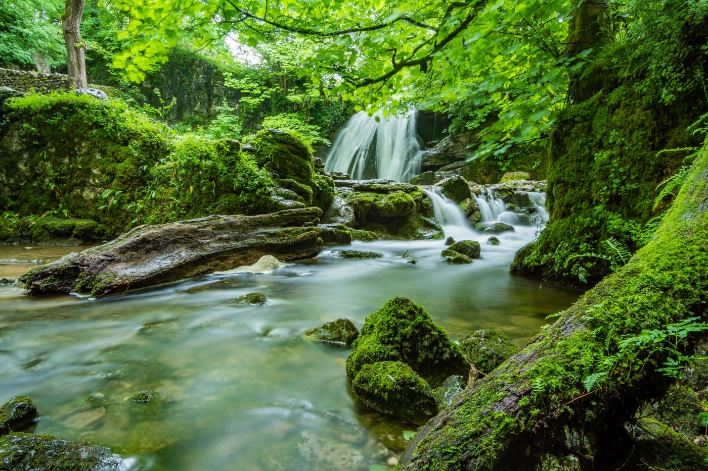
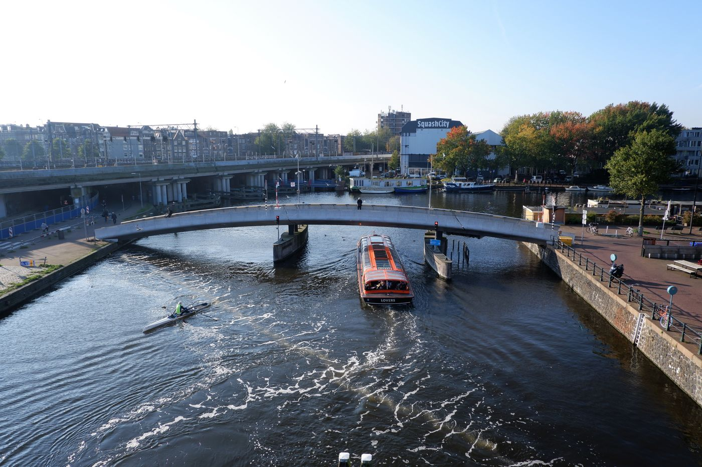

River Interceptors

Interceptors (The Ocean Cleanup effort)
About 1,000 rivers carry most of the plastic that reaches the ocean. Solar-powered Interceptors catch it in the river before it gets there. As of 2026, about 26 Interceptors operate across 12 countries, and their 30 Cities Program aims to stop up to one-third of all river-borne plastic by the end of the decade.

Sungai Watch
A Bali-based nonprofit installing simple trash barriers across Indonesia's most polluted rivers. Over 400 barriers installed and more than 4 million kilograms of plastic collected since 2020, with 180-plus full-time River Warriors running daily cleanups and sorting every piece into 30-plus material categories.

The Great Bubble Barrier
A Dutch social enterprise using a curtain of bubbles to catch plastic across the full width and depth of rivers and canals without blocking boats or fish. Bubble Barrier Amsterdam has captured over 1 million pieces since 2019, and barriers now operate in several Dutch cities heading toward the North Sea.
What are the Great Bubble Barrier Five W's and impact statement?